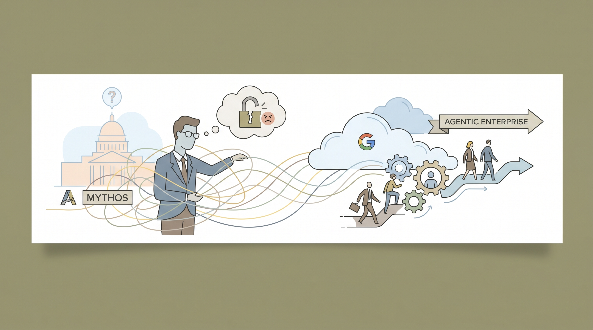

白宫要求Anthropic撤销韩国SK Telecom对其最强模型Claude Mythos的访问权限此前，该公司已因安全担忧将该模型下线。
两克伴AIGC日报
2026-06-19 星期五

本期关注：韩国电信巨头陷入Anthropic的Mythos争议漩涡、白宫希望Anthropic封堵所有越狱攻击。但这可能无法实现、谷歌云押注“代理型企业”赛道、一家初创公司声称突破了阻碍大语言模型发展的瓶颈
📰 行业动态
特朗普政府要求Anthropic确保Fable 5无法被越狱，但安全专家称完全阻止越狱在技术上不可行。
Google Cloud发布企业级Agentic AI战略，计划将自主代理能力深度整合至其云服务平台。
🔥 今日焦点
Miami的一家名为Subquadratic的AI创业公司上个月高调亮相，宣称解决了困扰大型语言模型多年的数学瓶颈问题。这家此前一直处于"隐身模式"的公司表示，他们找到了一种突破性方法来解决LLM训练和推理中的关键限制。如果这一声明属实且可复现，将意味着AI模型的效率可能迎来质的飞跃——更低的计算成本、更快的推理速度，同时保持或提升模型性能。当然，一家企业自称突破瓶颈并不等于真的突破，技术社区正在等待独立的复现验证。但这则消息的时机很有意思：正值各大科技公司争相发布新一代模型的关键节点，Subquadratic的出现让这场竞赛多了几分悬念。
***
📚 深度长文
🐦 Ta们说
> "“Cost per task varies by \~800x across models tested: Claude Fable 5 leads the benchmark but costs more than $31 per task on average, compared to \~$0.04 for DeepSeek V4 Flash (max). The strongest price/performance options are open weights models such as GLM-5.2 (max) and DeepSeek V4 Pro (max), with GLM-5.2 (max) scoring only \~90 Elo below Claude Opus 4.8 (max) for less than 25% of the cost”"
**解读**: HuggingFace CEO Clement列出了一组对比数据：Claude Fable 5单次任务平均成本超过31美元，而DeepSeek V4 Flash只需约0.04美...
> "The fact that open weights models are being discussed credibly at this level of capability should be a huge update for many.
The implications of open models getting to frontier performance ensures that you can always have sovereign AI, have the ability to post train for your specific workflows, cost optimize for various workloads, and actually afford to do much more with AI (which opens up meaningfully different applications).
> "This is a good update for getting access to Fable. It also gives us a view into what the future is likely going to look like with AI regulation.
The government will have frameworks that are used to determine future model releases past a certain threshold of capability or compute levels. Given all the constituents involved, and the economic and societal significance of AI, this was practically an inevitability.
📄 重点论文
**核心贡献**: 提出了去中心化环境下跨异构LLM智能体群体的知识共享基础设施。扩展了检索增强生成(RAG)范式，将智能体生成的工件组织为可复用知识库，支持跨智能体种群的问题解决，如同搜索引擎索引人类生成的内容以支持人类问题解决。设计了针对智能体工作流优化的检索系统。
**与AI Agent的关联**: 直接针对多智能体系统的核心挑战——知识隔离问题，提出了跨智能体知识共享机制。对构建协作式AI智能体系统具有重要价值，使不同能力的智能体能够共享经验与知识，提升群体智能的效率和能力上限。
**核心贡献**: 系统性评估了MCP工业智能体基准的预测效度，涵盖14项并行实现研究，涉及多模态视觉扩展、替代编排策略、检索策略、推理模式及基础设施优化等维度。研究揭示了现有基准的局限性，指出单一基准无法覆盖智能体部署暴露的多维能力空间。
**与AI Agent的关联**: 为LLM智能体评估提供了方法论革新，从静态榜单转向实际部署效度评估。对智能体系统的标准化评测、可靠性验证和产业落地具有关键指导意义，有助于建立更科学的智能体能力度量框架。
⭐ 1.4K
做视频的朋友应该都有这种体验：想用AI生成点素材，得在好几个软件之间来回切换，效率很低。Palmier Pro就是来解决这个问题的——这是一个专门为AI工作流设计的macOS视频编辑器。